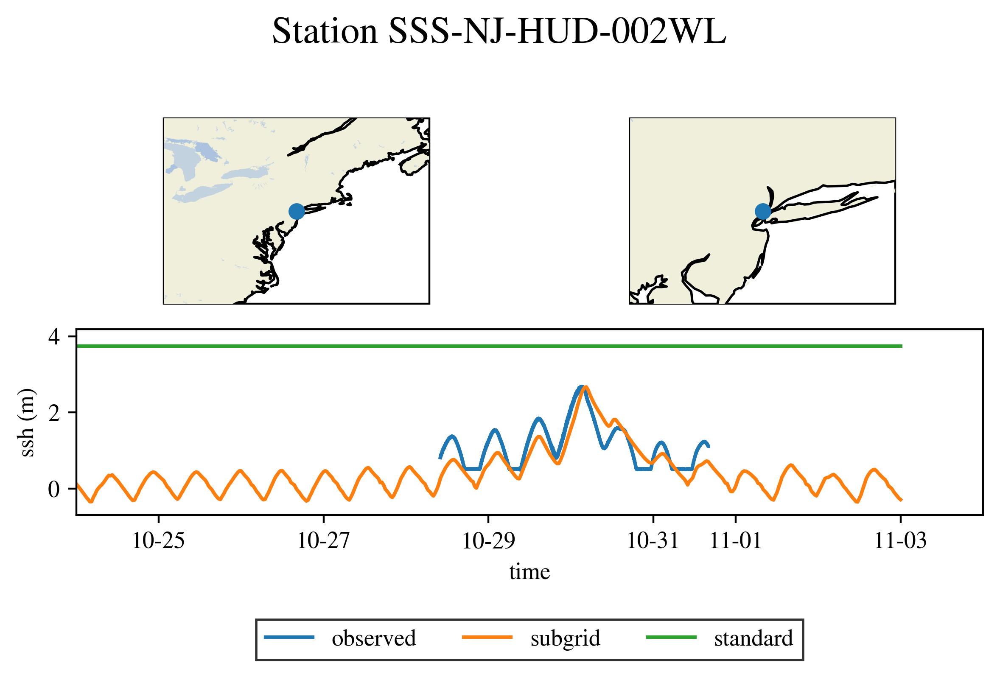
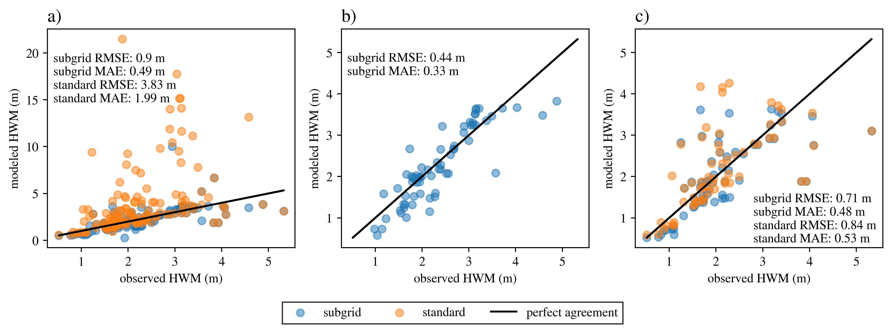
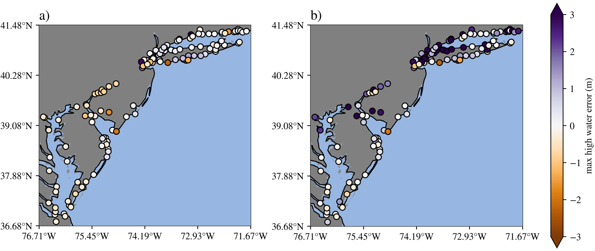

hurricane
The ocean/hurricane test group defines meshes,
initial conditions, forward simulations, and validation for global,
realistic ocean domains with regional refinement. These simulations
are forced with time-varying atmospheric reanalysis data for tropical
cyclone events and tides. The meshes contain refined regions in order
to resolve coastal estuaries, making it possible to simulate the
storm surge that results from a given hurricane event. Additionally, the
simulations use tidal potential forcing and MPAS-Ocean’s wetting and drying
scheme to simulate coastal inundation. The forward simulations can optionally
be run with a subgrid-scale correction scheme that accounts for fine-scale
bathymetric variation in partially-wet cells, improving the flood prediction
accuracy. hurricane currently supports 3 meshes (DEQU120at30cr10rr2,
DEVR45to5rr1, RRS6to18) and one storm, Hurricane Sandy.
These tests are configured to use the barotropic, single layer configuration of MPAS-Ocean. Each mesh is created to contain the floodplain, which is used to simulate coastal inundation using the wetting and drying scheme.
The time stepping options to run the simulations include the fourth
order Runge-Kutta scheme (RK4), and two local time-stepping schemes.
The first LTS scheme is based on a strong stability preserving Runge-Kutta
scheme of order three and is called LTS3, see
Lilly et al. (2023)
for details.
The second LTS scheme is based on a forward-backward Runge-Kutta scheme
of order two and is called FB-LTS.
Each test case in the ocean/hurricane test group has a counterpart
for each LTS scheme which is identified by appending the test case name
with _lts for LTS3 and _fblts for FB-LTS.
Meshes
The process for creating hurricane meshes is described below in the
mesh test case. hurricane currently supports 3 meshes, each with differing
levels of refinement. The coarsest mesh (DEQU120at30cr10rr2) uses a global
quasi-uniform horizontal resolution of 120 km with 30 km Atlantic refinement
and floodplain refinement down to 2 km, and is primarily for testing purposes.
The intermediate mesh (DEVR45to5rr1) uses a variable horizontal resolution of
45 km to 5 km scaled by bathymetry with floodplain refinement down to 1 km.
The finest mesh (RRS6to18) is reproduced from the global_ocean test group.
These meshes are designed to work with the barotropic, single layer
hurricane configurations, and they do not include ice-shelf cavities.
DEQU120at30cr10rr2
The quasi-uniform 120 km mesh with regional refinement (DEQU120at30cr10rr2) uses the following resolutions: (1) global horizontal resolution of 120 km, (2) 30 km refinement in the Atlantic Ocean, (3) 10 km refinement along the Mid-Atlantic Bight, and (4) 2 km refinement along the coastal floodplain. The floodplain is defined by a 10 m elevation threshold. This mesh is primarily for testing purposes.
DEVR45to5rr1
The variable-resolution 45 km to 5 km mesh with regional refinement (DEVR45to5rr1) uses the following resolutions: (1) global horizontal resolution ranging from 45 km over the deep ocean to 5 km over the shallow ocean, (2) 1 km refinement along the Mid-Atlantic Bight and the coastal floodplain. The floodplain is defined by a 40 m elevation threshold, and only where refinement exceeds 4 km. This mesh is designed for predicting hurricane flooding along the US East Coast, such as the flooding caused by hurricanes Sandy and Irene.
RRS6to18
The RRS6to18 mesh is a high-resolution global mesh with Rossby-radius-scaling
of horizontal resolution from 18 km down to 6 km, designed for E3SMv3. This
mesh is reproduced here from the global_ocean test group. The hurricane
version of this mesh includes a floodplain with an extent prescribed by a
GEOJSON region file. Additionally, the floodplain is constrained by a 20 m
elevation threshold, and only where refinement exceeds 16 km. The use of this
mesh for flooding simulations is experimental.
Test cases
mesh test case
The mesh test case uses the mesh step from the global_ocean test group
to generate the global mesh based on a specified mesh resolution function.
Next, bathymetry/topography data is interpolated onto the mesh from the NASA
Shuttle Radar Topography Mission 15 arcsecond (SRTM15+) data product. This
interpolation step is necessary, because the topography in the floodplain is
used to set a mask for the cell culling process. The land cells above the
floodplain_elevation are then culled from the mesh. The floodplain can be
further constrained by a refinement threshold floodplain_resolution, or a
region GEOJSON file floodplain_geojson. Finally, the bathymetry is
re-interpolated onto the mesh since this data is not carried over from the
cell culling process.
If either LTS option is selected for the mesh test case, an additional step is carried out after the mesh culling. This step appropriately flags the cells of the mesh according to a user defined criterion in order to use time-steps of different sizes on different regions of the mesh. The parallel partitioning is modified accordingly to achieve proper load balancing.
init test case
The init test performs steps to set up the vertical mesh,
initial conditions, atmospheric forcing, and parameterized wave and bottom
drag, and prepares the station locations for timeseries output.
interpolate atmosphere forcing step
The CFSv2 reanalysis wind vector components and atmospheric pressure fields for the storm event are interpolated onto the horizontal mesh at hourly intervals. These are read in and used to update the atmospheric forcing in the forward run.
create pointstats file step
In order to perform validation of the forward simulation, timeseries data
is recorded at mesh cell centers which are closest to observation stations.
This step reads in the observation station locations and finds the cells
closest to them. A file is created that is the input to the
pointWiseStats analysis member for the forward run.
compute topographic wave drag step
The reciprocal of the e-folding time, r_inv, from the HyCOM model,
is computed in this step. See
Buijsman et al. (2016)
for details on the computation. This coefficient is needed to account
for the topographic wave drag tendency in the model.
initial state step
The initial state step runs MPAS-Ocean in init mode to create the initial condition file for the forward run. The vertical mesh is set up for a single layer case and the ssh with a thin layer on land for wetting and drying cases.
If the subgrid option is selected, the Digital Elevation Model (DEM) and
Land Use/Land Cover (LULC) tiles are processed to create look-up tables for
the forward step corrections, and the DEM tiles are averaged to create the
coastal and floodplain topography.
If either LTS option is selected for the init test case, the modified partitioning done in the mesh step is used to run MPAS-Ocean init mode.
sandy test case
The sandy test case is responsible for the forward model simulation and analysis.
forward step
The forward step runs the model simulation of the storm. The simulation begins with a spinup period, where the tides and atmospheric forcing are ramped to their full value to avoid shocking the system.
If the subgrid option is selected, look-up tables are used to make the
DEM and LULC corrections in the forward mode.
If either LTS option is selected for the sandy test case, the LTS scheme is used to advance the solution in time rather than the default RK4 scheme.
analysis step
The analysis step plots the timeseries data at each observation station to compare the modeled and observed data. Both NOAA and USGS station data are used for the validation.
{kind=link}

{kind=link}

{kind=link}
